Замки які можно відвідати
Замки які можно відвідати
Кам'янець-Подільський
Замок був споруджений в 11-12 століттях. Основні укріплення фортеці були добудовані в 16-17 століттях. Фортеця є відмінним зразком надійної фортифікації Східної Європи. Фортеця досі приймає відвідувачів.
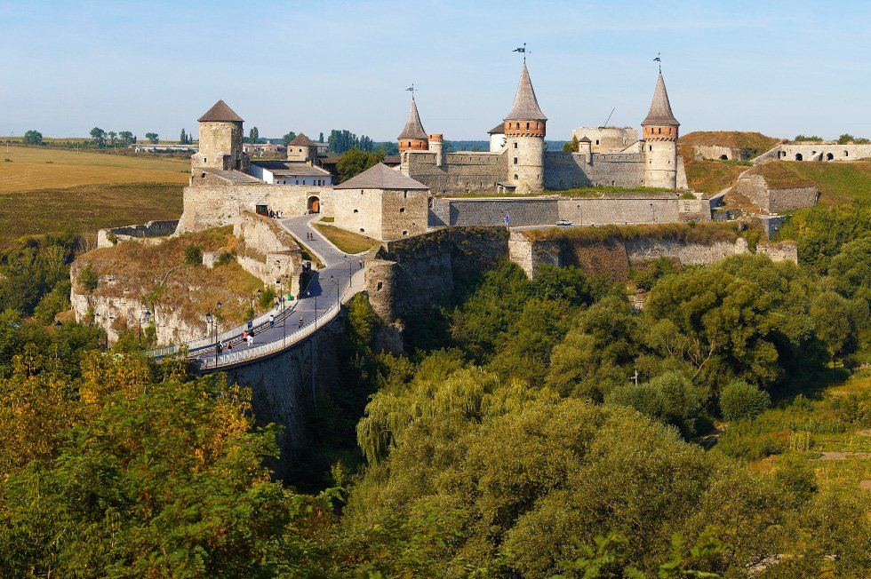
Олеський замок
Був побудований в 14-17 століттях, на землях Галичини. Точна дата будівництва замку невідома. Вперше про нього згадується в 1837 році. Кажуть, що його побудував син князя Львовича. У 1646 році його зруйнували татари, але в 1682 році його викупив і відбудував колись народжений у ньому князь Речі Посполитої Ян ІІІ Собеський.
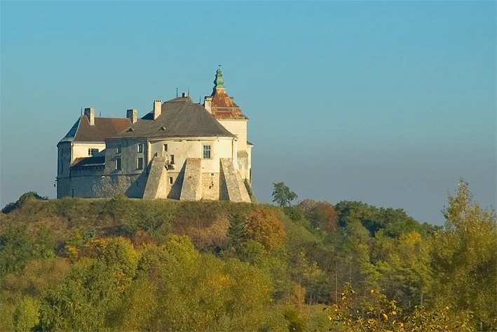
Замок Паланок
Називається також Мукачівський замок. Він був побудований на 68-метровій вулканічній горі. Перша згадка про замок в 11 столітті. Точна дата будівництва не відома. В оборонній системі замку було 14 веж. Його захопили австрійці, і він довгий час був фортецею Австрійської імперії.
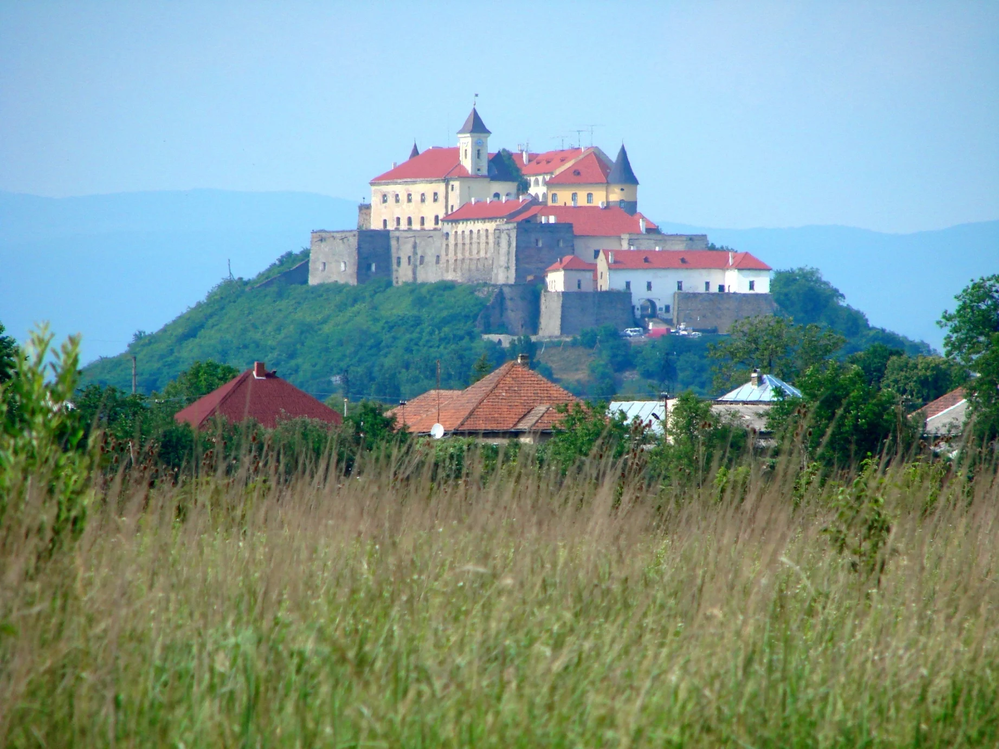
Підгорецький замок
Знаходиться у Львівській області. Він споруджений у стилі епохи Відродження двома відомими архітекторами того часу. Один із замовників замку був гетьман Станіслав Конецпольський, він викупив його у Підгорецьких. Будівництво замку проходило з 1635 року по 1640.
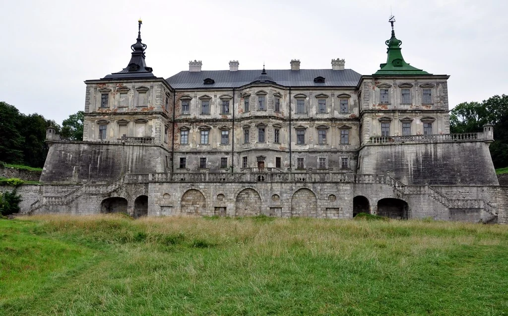
Острозький замок
Побудований на пагорбі. Раніше там було дерев'яне укріплення, але у 1241 році воно було зруйноване. З 14 по 17 століття він був родовим маєтком Острозьких. У замку є дві вежі. На території замку є Богоявленський собор.
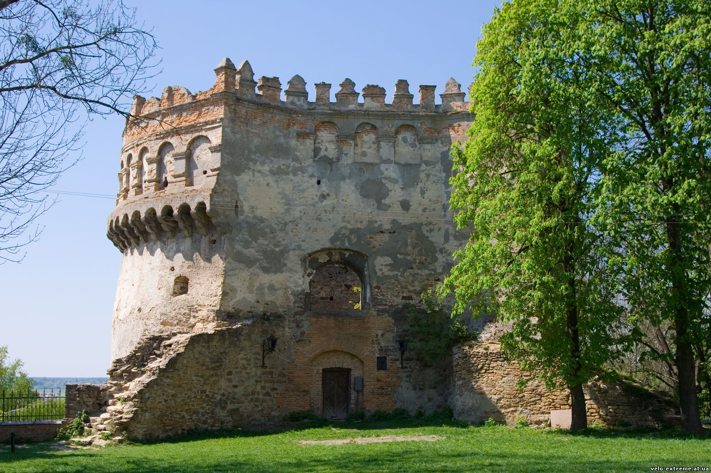
Замок Шенборнк
Один з наймолодших замків. Розташований в селі Карпати, що в Мукачівському районі Закарпаття. Був заснований в 1890 році як мисливський будиночок, а також як резиденція для графа Шенборна. У ньому 365 вікон, 52 димаря, 12 входів. Всі ці числа відповідають дням у році, тижням в році, і місяцям у році. Замок діючий.
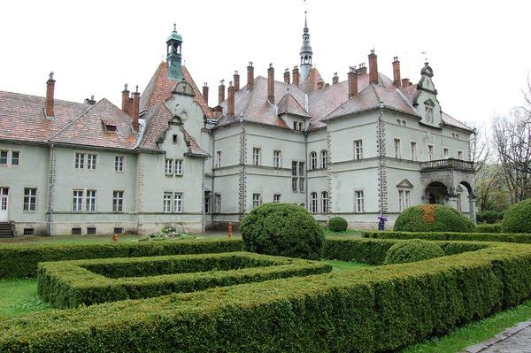
Золочівський замок
Знаходиться у Львівській області. Був побудований більше ніж 500 років тому. Це комплекс з двох палаців. Обидва побудовані в стилі ренесанс. У ньому були знайдені два камені з невідомими написами на них.
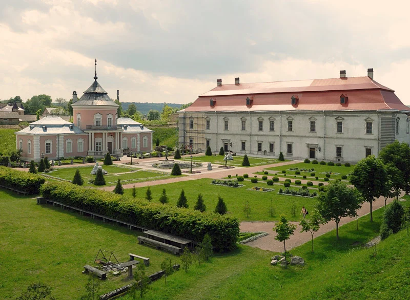
Свірзький замок
Знаходиться в 40 кілометрах від Львова. Був побудований в 16 столітті, на замовлення магнатів Свірзьких. У фортецю його перетворив наступний власник, граф Центнер, в 17 столітті. Замок знаходиться в старовинному парку. Біля нього є костел 15 століття.
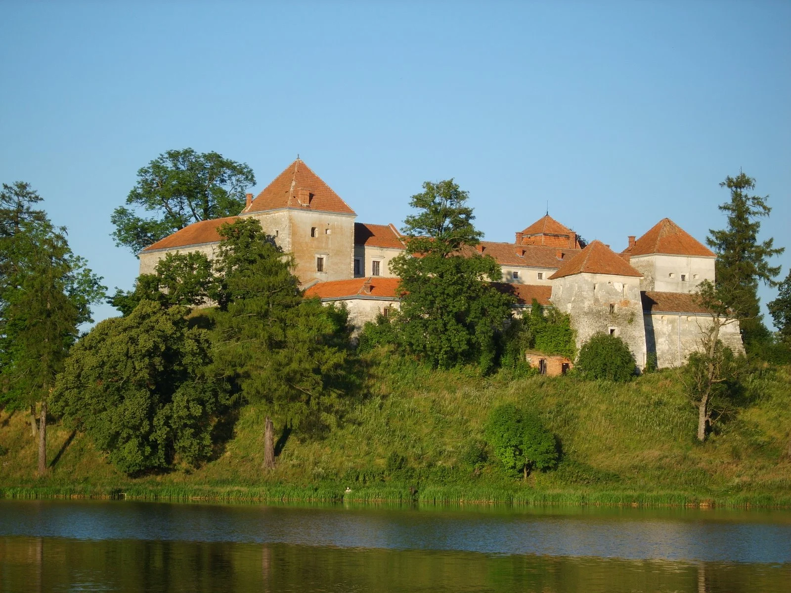
Хотинський замок
Приймає середньовічні фестивалі, там знімають кіно. Тисячі туристів щорічно відвідують Хотинський замок. Це одне із семи чудес України. Будівництво кам'яних укріплень Хотина прийнято пов'язувати з Галицько-Волинським князівством і з ім'ям Данила Галицького.
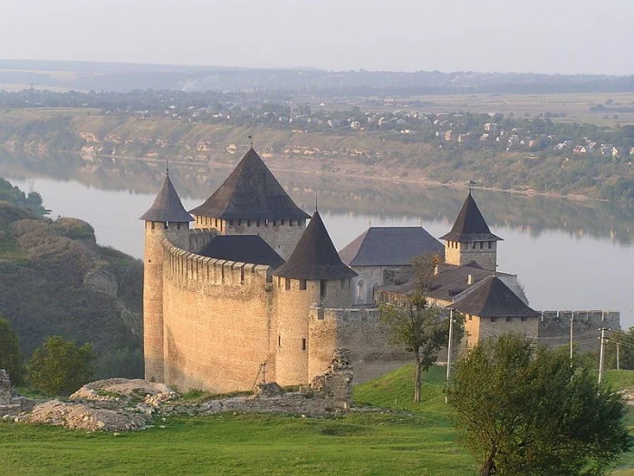
Меджибізький замок
Замок-фортеця, розташований в селищі Меджибіж, у верхів'ях річки Південний Буг, при впаданні ріки Бужок, в 30 кілометрах на схід від міста Хмельницького. Найстаріша інформація, що стосується фортеці у Меджибожі, походить з часів існування укріпленого міста Рюрикович, яке виникло над Південним Бугом близько 1146 року. Першим господарем меджибізького міста найімовірніше був Святослав Рюрикович. В 1240 році, під час коли містом володів князь Галицький Данило Романович, Меджибіж захопили і знищили татари. Після того, як литовці у 1362 році відвоювали Поділля у татар, на місці колишніх укріплень було споруджено укріплений замок.
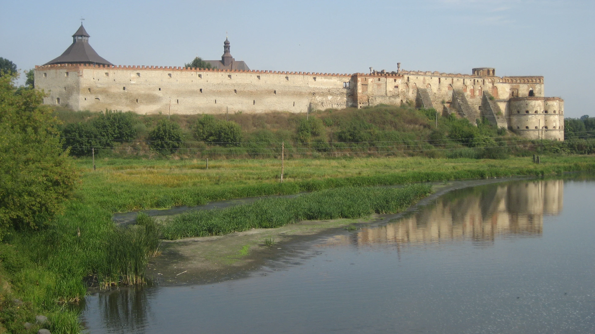
Хотинський замок
Знаходиться в смт Летичів-це кругла зубчаста вежа, що височить над трасою Вінниця-Хмельницький, є фрагментом Летичівського замку, побудованого в XVI ст. кам'янецьким старостою Яном Потоцьким на вимогу польського короля. Після того, як у 1606 р. Потоцький з протестантизму звернувся в католицизм, замок перейшов у розпорядження ченців-домініканців. Вони почали перебудову замку під монастир.
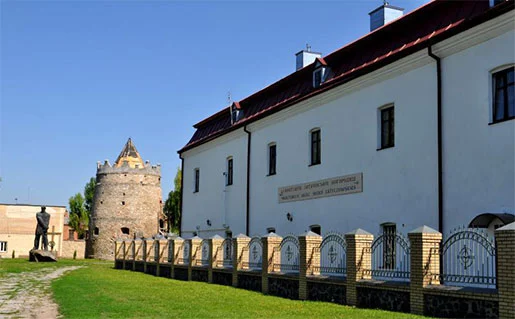